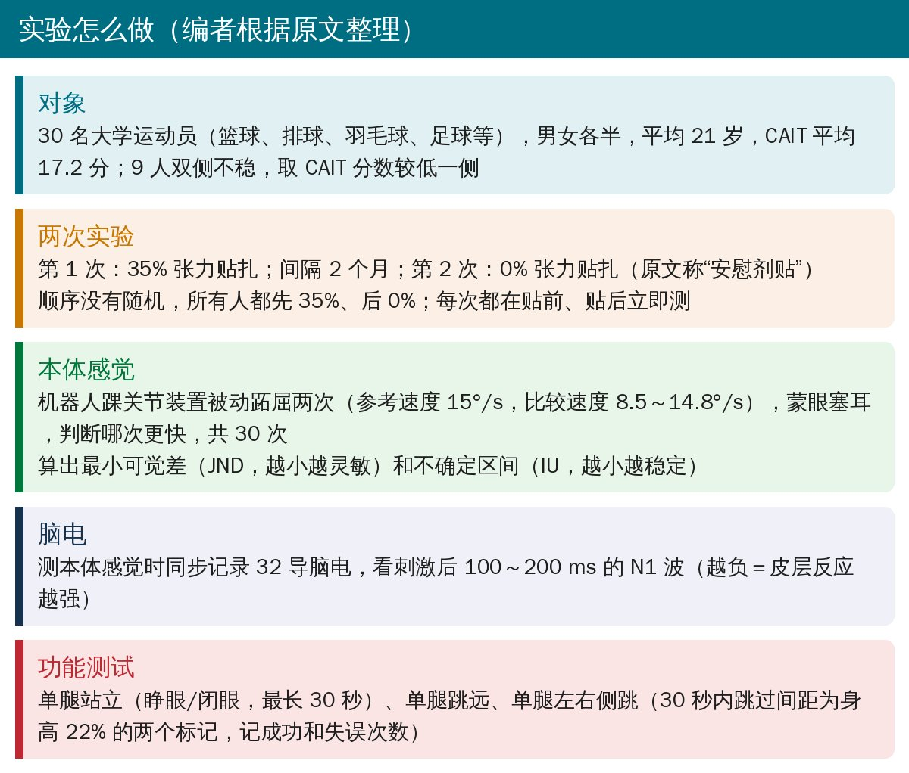
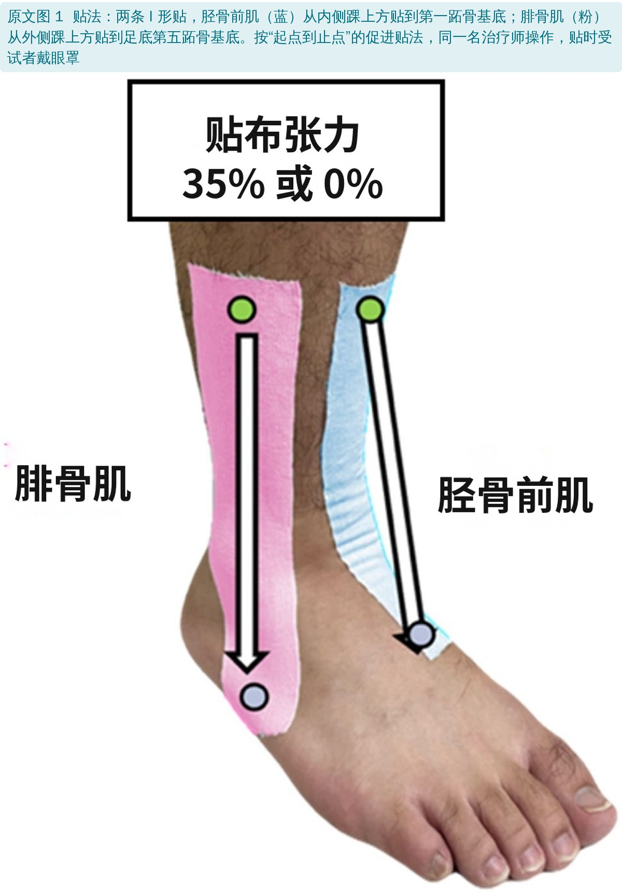
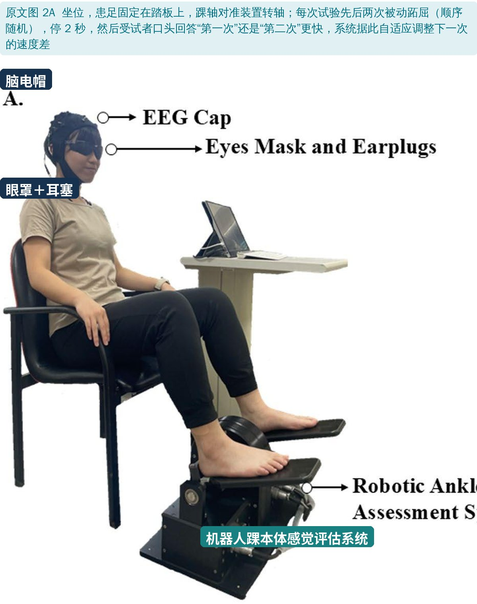
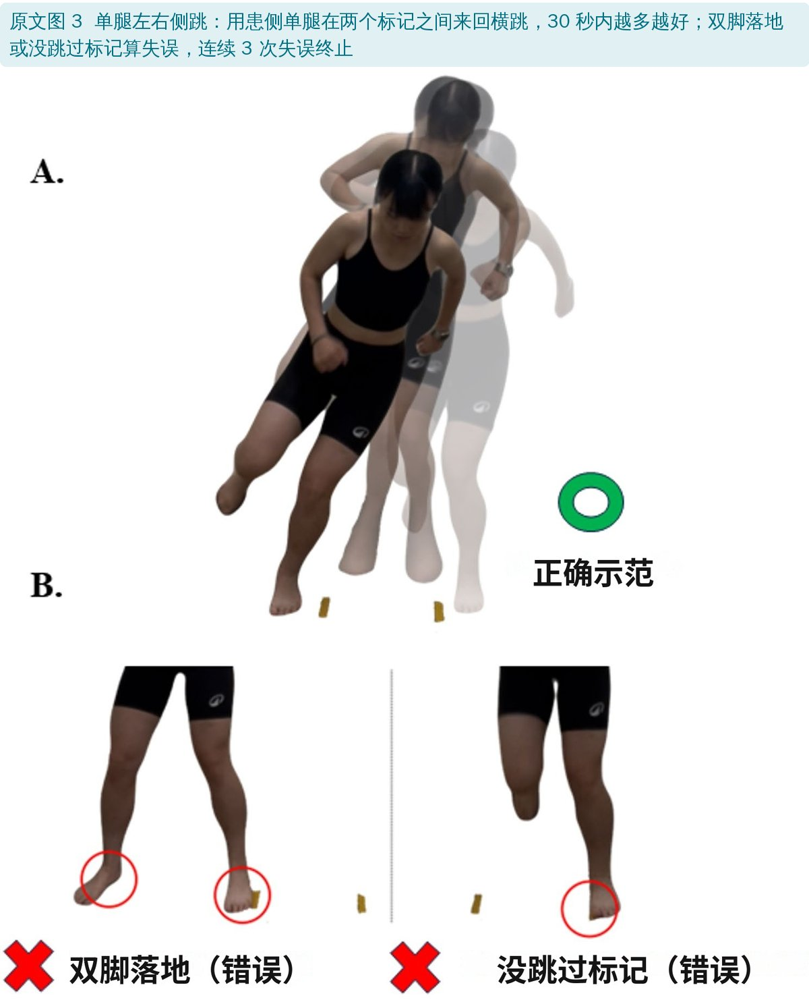
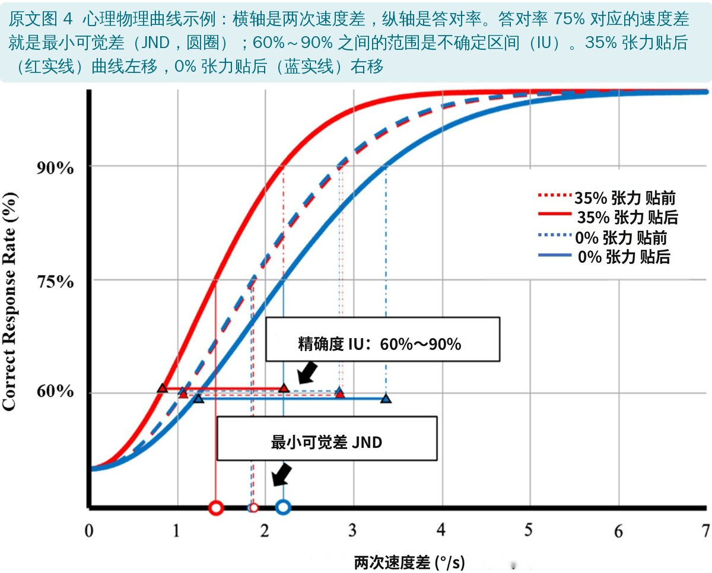
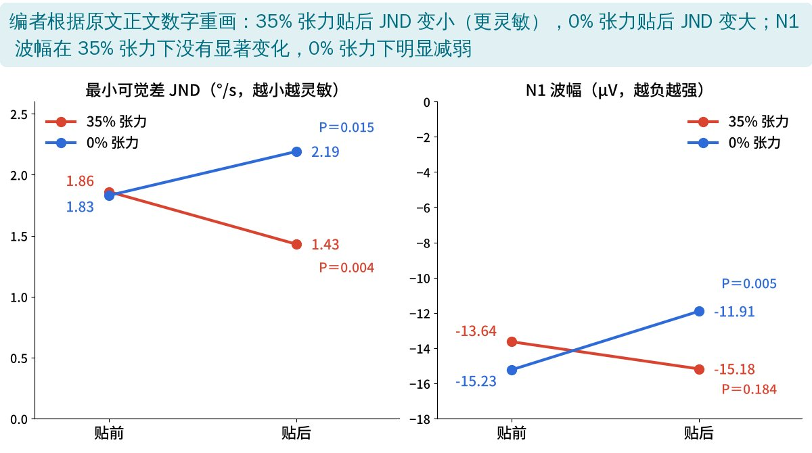
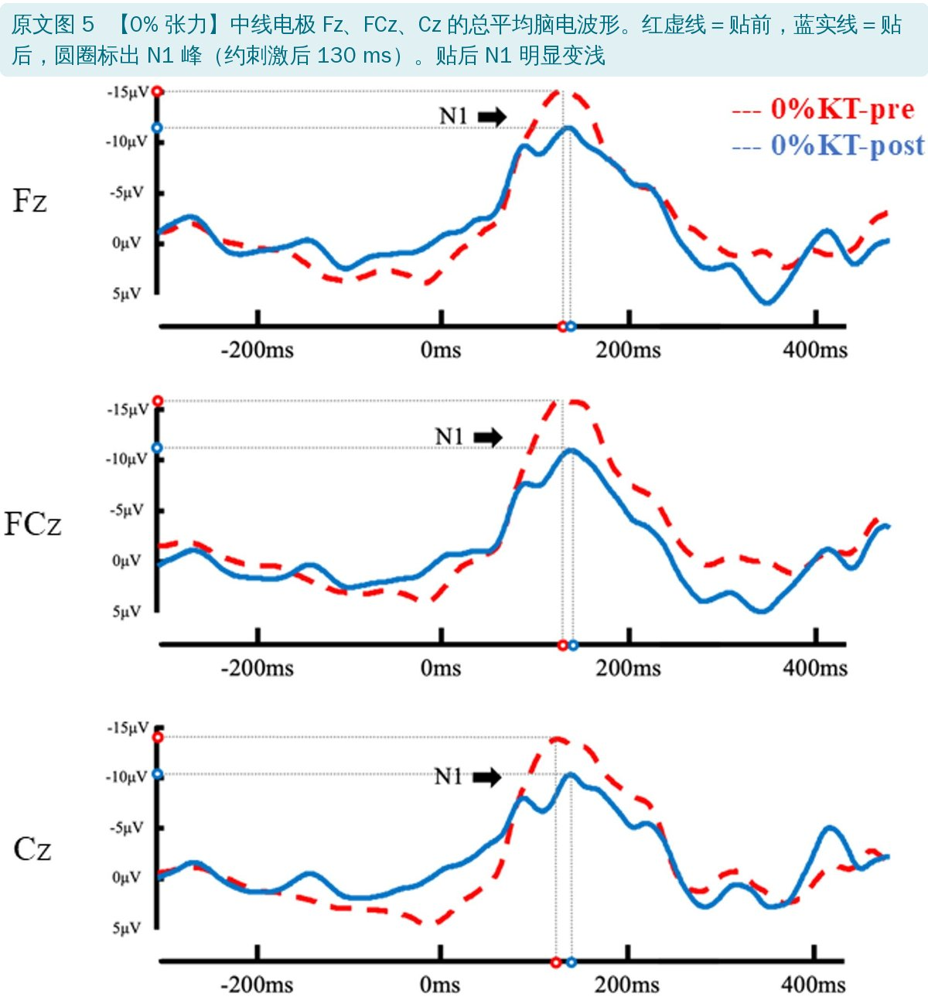
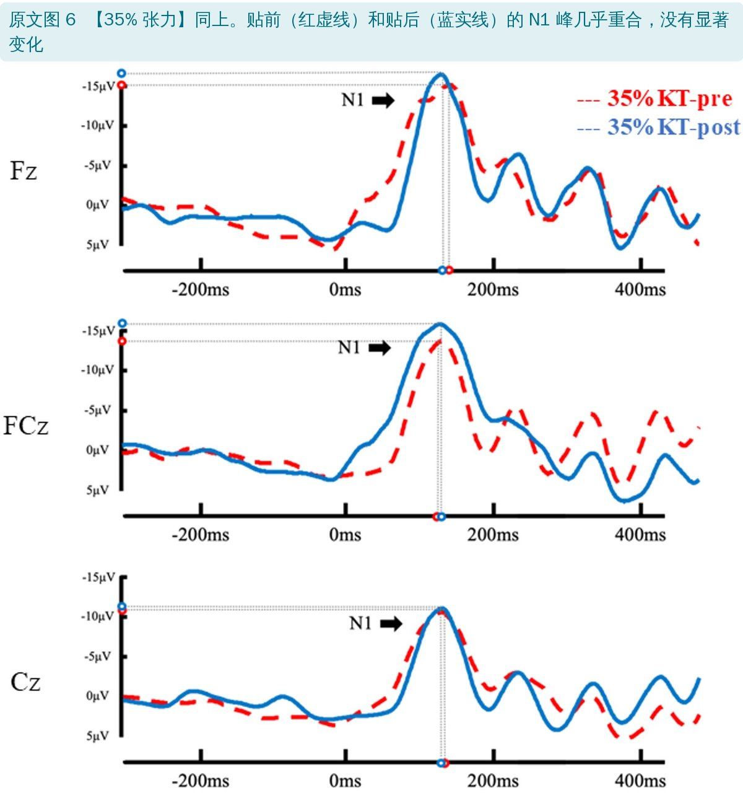
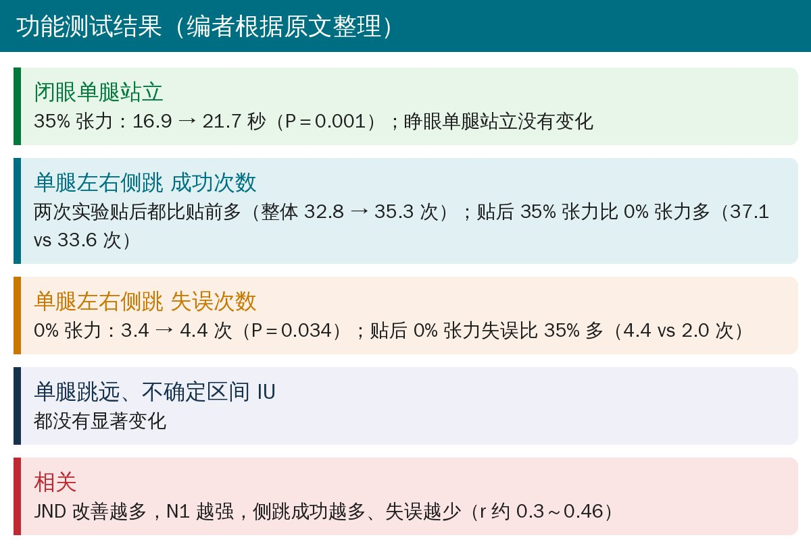

🔖原文信息（编者中文重排）
📚 文献信息
▪ Chang CL, Lin HY, Tseng YT, Pan CY, Chen FC, Tsai CL. Immediate effects of kinesiology taping on proprioception and functional performance in collegiate athletes with chronic ankle instability: evidence from event-related potentials. BMC Sports Science, Medicine and Rehabilitation. 2026;18:83. doi:10.1186/s13102-025-01468-w
▪ 作者单位：台湾成功大学体育健康与休闲研究所等
▪ 文章类型：自身交叉设计研究（30 名运动员，同一批人先后接受两种张力的贴扎）
• 约 40% 的踝扭伤运动员会发展为慢性踝不稳；问题不只是韧带松，还有本体感觉下降——感知踝关节位置和运动的能力变差，肌肉反应延迟、落地不准，更容易再扭伤
• 肌内效贴被认为能通过牵拉皮肤、刺激皮肤机械感受器来增强感觉输入
• 但研究结果不一致，一个可能原因是各研究的贴布张力差别很大（0%～35%）
• 本研究用精确的本体感觉测试（机器人测“能分辨多小的速度差”）加脑电，比较 35% 张力和 0% 张力的即刻效果

🔖实验设计（编者根据原文整理）

🔖原文图 1：贴法

🔖原文图 2A：机器人踝本体感觉测试

🔖原文图 3：单腿左右侧跳
剪多长：剪裁长度 ＝ [（实际长度 − 8 cm）÷ 系数 ＋ 8 cm] × 1.10，35% 张力系数取 1.35，0% 张力取 1.00（两端各留 4 cm 不拉伸的锚点）。

🔖原文图 4：心理物理曲线示例

🔖JND 和 N1 结果（编者重画）
• 35% 张力：最小可觉差从 1.86 降到 1.43 °/s（P＝0.004），能分辨的速度差更小，感觉更灵敏
• 0% 张力：最小可觉差从 1.83 升到 2.19 °/s（P＝0.015），反而变差
• 不确定区间（IU）两种条件都没有变化
• 脑电 N1：0% 张力贴后 N1 从 −15.2 减弱到 −11.9 μV（P＝0.005）；35% 张力贴后 −13.6 → −15.2 μV，没有显著变化（P＝0.184）

🔖原文图 5：0% 张力的脑电波形

🔖原文图 6：35% 张力的脑电波形

🔖功能测试结果（编者根据原文整理）
作者结论：适当张力的肌内效贴能即刻提高本体感觉、皮层反应和功能稳定性，而不加张力的“安慰剂贴”可能干扰感觉处理、降低表现。
• 顺序没有随机：所有人都先做 35%、两个月后再做 0%。两次实验的季节、训练状态、对测试的熟悉程度、期望都可能不同，差异不一定来自张力
• 盲法不完整：贴的时候戴眼罩，但 35% 和 0% 张力贴上后皮肤牵拉感明显不同，受试者很可能分得出来；功能测试的评估者也不盲
• 统计方法：同一批人做两种条件，统计自由度 F(1,58) 却相当于把 60 次测量当作独立样本，文中还出现了并不存在的“组别主效应”；相关分析也把每人两次的数据混在一起算
• “0% 张力变差”难以解释：作者原先假设 0% 张力不会有变化，结果却变差，事后解释为“安慰剂贴干扰感觉”，缺少直接证据
• 结论说过头：摘要和结论说 35% 张力“增强了皮层反应”，但 35% 张力下 N1 并没有显著变化
• 效应量小、只看即刻：JND 改善约 0.4 °/s，临床意义不明；贴完马上测，不知道能维持多久，也不知道能否减少再扭伤
• 优点：本体感觉测试精细（随机顺序、贝叶斯自适应），同步记录脑电，样本量事先计算，男女各半
• 阈值数字矛盾：说两次运动的角度差“控制在 4° 以下，小于健康年轻人约 2.4° 的位置觉阈值”——4° 明明大于 2.4°
• N1 时间窗不一：引言写 N1 出现在刺激后 100～150 ms，方法写 100～200 ms
• 设计名称不一：方法称“自身交叉设计”，统计部分写“两因素混合设计”，结果中多次报告“组别主效应”
• 引言前后矛盾：先说肌内效贴对慢性踝不稳本体感觉和功能的影响“仍然未知”，下一句就列举了多项已有研究
• 结论与数据不符：35% 张力下 N1 无显著变化（P＝0.184），摘要却说“适当张力增强皮层反应”
• 笔误：表 2 写“p < 0.504”；伺服电机精度写“4.29–5°”，含义不明
• 局限性说法：局限性称“样本量较小”，而事先功效分析只需要 26 人，研究纳入了 30 人
• 给慢性踝不稳运动员贴肌内效贴，拉一定张力（约 35%）比不拉更合理：至少在贴上当下，感觉更灵敏，闭眼单腿站得更久，侧跳失误更少
• 不要把“不拉张力”当作无害：本研究中 0% 张力贴后感觉和侧跳表现反而变差（虽然可能有顺序效应）
• 贴法简单：胫骨前肌、腓骨肌各一条 I 形贴，从踝上方贴到足部
• 肌内效贴只是即刻的辅助手段，长期仍要靠平衡、本体感觉和力量训练
欢迎关注骨科康复小黄公众号，获取更多物理治疗的专业知识！
📄参考文献：
Chang CL, Lin HY, Tseng YT, Pan CY, Chen FC, Tsai CL. Immediate effects of kinesiology taping on proprioception and functional performance in collegiate athletes with chronic ankle instability: evidence from event-related potentials. BMC Sports Sci Med Rehabil. 2026;18:83. doi:10.1186/s13102-025-01468-w
原文以 CC BY 4.0 协议开放获取，版权归原作者所有。本文为学术交流中文解读：原文图 1～6 引自原文，图中中文标签为编者所加；JND 和 N1 结果图由编者根据原文数字用中文重画，设计卡和结果卡为编者整理。仅供学习交流，如有侵权请联系删除。